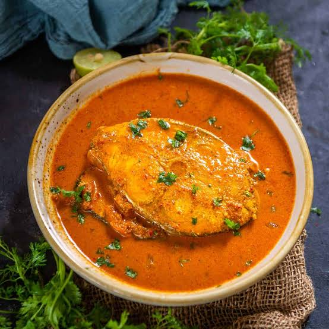

fish curry
Recipe
Equipment:
pan
Ingredients:
5-6 medium fish cutlets
4 tablespoon oil
1 teaspoon cumin seeds
1 medium onion (chopped)
1 tablespoon ginger-garlic paste
1 cup fresh tomato puree
2 cups of water
For garnish :
chopped coriander (optional)
Spices:
1 tsp. turmeric powder
1 tsp. chili powder or as per taste
2 tsp. salt or as per taste
1 tsp. garam masala powder or if using whole spices( bay leaf, or powdered green/black cardamom, 2-3 cloves,1 cinnamon stick)
Instructions For cooking fish:
Heat 1 tablespoon oil and cook the fish cutlets for 2-3 minutes on each side,keep aside.
For fish Curry:
Heat the remaining oil in pan.
Add cumin seeds and whole spices, let them crackle. Add onion, ginger-garlic paste.Sauté until onions are golden brown.
Add tomato puree, salt and sauté for 10 minutes.
Now,add rest of the spices and sauté for 2 minutes.
Add water and let it boil.
Add the cooked fish pieces to the curry and simmer for 5 minutes.
Garnishh with coriander, serve warm with rice or malabar parota.